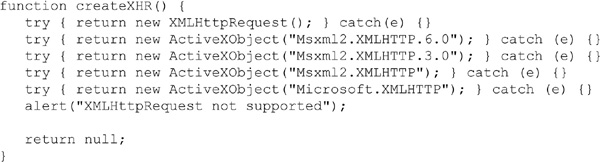
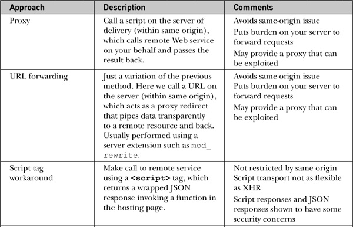
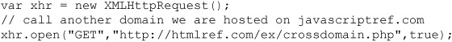

Ajax (Asynchronous JavaScript and XML) encompasses much more than the technologies that make up this catchy acronym. The general term Ajax describes the usage of various Web technologies to transform the sluggish batch submission of traditional Web applications into a highly responsive, near-desktop-software-like user experience. However, such a dramatic improvement does come with the price of a significant rise in programming complexity, increased network concerns, and new user experience design challenges.
This chapter presents a complete overview of the XMLHttpRequest object that is at the heart of most Ajax applications. It also serves as an introduction to the challenges of using remote JavaScript for communications, including both emerging features and older communication mechanisms.
NOTE Interested readers looking for details on the application of Ajax are directed to Ajax: The Complete Reference, by Thomas A. Powell (McGraw-Hill Professional, 2008), www.ajaxref.com, which contains an in-depth discussion of this topic.
Traditional Web applications tend to follow the pattern shown in Figure 15-1. First, a page is loaded. Next, the user performs some action such as filling out a form or clicking a link. The user activity is then submitted to a server-side program for processing while the user waits, until finally a result is sent, which reloads the entire page.
Figure 15-1 Traditional Web application communication flow
While simple to describe and implement, the downside to the traditional Web model is that it can be slow, as it needs to retransmit data that makes up the complete presentation of the Web page over and over in order to repaint the application in its new state.
Ajax-style applications use a significantly different model where user actions trigger behind-the-scenes communication to the server fetching just the data needed to update the page in response to the submitted actions. This process generally happens asynchronously, thus allowing the user to perform other actions within the browser while data is returned. Only the relevant portion of the page is repainted, as illustrated in Figure 15-2.
Figure 15-2 Ajax-style communication flow
Beyond this basic overview, the specifics of how an Ajax-style Web application is implemented can be somewhat variable. Typically, JavaScript invokes communication to the server, generally using the XMLHttpRequest (XHR) object. Alternatively, other techniques such as inline frames, <script> tag–fetching remote.js files, image requests, or even the Flash player are used. After receiving a request, a server-side program may generate a response in XML, but very often you see alternate formats such as plain text, HTML fragments, or JavaScript Object Notation (JSON) being passed back to the browser. Consumption of the received content is typically performed using JavaScript in conjunction with Document Object Model (DOM) methods. A graphic description of the wide variety of choices in implementing an Ajax-style Web application is shown in Figure 15-3.
Figure 15-3 Ajax applications may vary in implementation.
With the basic concepts out of the way, we now jump right into coding with the ubiquitous “Hello World” example. In this version of the classic example, we will press a button and trigger an asynchronous communication request using an XMLHttpRequest (XHR) object. The Web server will issue an XML response that will be parsed and displayed in the page. The whole process is overviewed in Figure 15-4.
Figure 15-4 Hello Ajax World in action
To trigger the action, a simple form button is used, which, when clicked, calls a custom JavaScript function sendRequest() that will start the asynchronous communication:
When the sendRequest() function is invoked by the user click, it will first try to instantiate an XMLHttpRequest object to perform the communication by invoking another custom function createXHR(), which attempts to hide version and cross-browser concerns:
The function uses try-catch blocks to attempt to create an XHR object. It first tries to create it natively, as supported in Internet Explorer 7+, Chrome, Safari, Opera, and Firefox. Then, if that fails, it tries using the ActiveXObject approach supported in the 5.x and 6.x versions of Internet Explorer:

If the createXHR() function returns an XHR object, you begin your server communication by using the open() method to create an HTTP GET request to the URL http://javascriptref.com/3ed/ch15/sayhello.php. A true flag is specified to indicate that the request should proceed asynchronously, meaning that it shouldn’t block the browser during communication. We should also point out that, by default, the method will assume asynchronous to be true and that the synchronous method really doesn’t work properly. We’ll get to all that shortly; for now, the simple method invocation would be as follows:
This is just the briefest overview of the XHR object, as we will study it in great depth in an upcoming section.
Before moving on, you might want to call the test URL directly in your browser. It should return an XML response with a message indicating your IP address and the local time on the server, as shown in Figure 15-5.
Figure 15-5 Returned XML packet shown directly in browser
It should be noted that it is not required to use XML in Ajax, and we’ll take a look at how JSON or even HTML may be a preferable format a bit later in the chapter. For now, let’s continue building our first Ajax example.
After creating the request, a callback function called handleResponse() is defined that will be invoked when data becomes available, as indicated by the onreadystatechange event handler. The callback function employs a closure that captures variable state so that the code has full access to the XHR object held in the variable xhronce handleResponse() is finally called:
Finally, the request is sent on its way using the send() method of the previously created XHR object. The complete sendRequest() function is shown here:
Eventually, your server should receive our request and invoke the simple sayhello.php program shown here:
It is important to point out that Ajax does not favor or require any particular server-side language or framework. The general idea should be the same in whatever environment you are comfortable. We only use PHP here because it is common and simple. Obviously, we could easily have used JSP or even server-side JavaScript to respond.
Stepping through the server-side code, we first emit some HTTP headers to indicate that the result should not be cached. Next, the appropriate Content-Type HTTP header is set to text/xml, indicating that XML will be returned. Finally, an XML packet is created containing a greeting for the user that also includes the user’s IP address and local system time to prove that the request indeed went out over the network. However, it is much better to monitor the actual progress of the request directly, as shown in Figure 15-6.
Figure 15-6 HTTP transaction details
Once the browser receives data from the network, it will signal such a change by modifying the value of the readyState property of the XHR object. Now, the event handler for onreadystatechange should invoke the function handleResponse(). In that function, the state of the response is inspected to make sure it is completely available, as indicated by a value of 4 in the readyState property. It is also useful to look at the HTTP status code returned by the request. Ensuring that the status code is 200 gives at least a basic indication that the response can be processed. Admittedly, there is much more that should be addressed than the readyState and status code in order to build a robust Ajax application, but this degree of detail is adequate for this simple example.
With the XML response received, it is now time to process it using standard DOM methods to pull out the message string. Once the message payload is extracted, it is output to a <div> tag with the id responseOutput:
The complete example is shown in the following listing. We should warn readers that, because of same-origin considerations, running this example off your local system could have problems. We’ll discuss this issue shortly, but until then inspect the code and run the demo online:
ONLINE http://javascriptref.com/3ed/ch15/helloajaxworld.html
Since we used just a simple example in the previous section, we avoided adding too many features or addressing any contingencies that we should if building a robust Ajax-style application. Specifically, to build a proper Ajax-style application you will need fine control over communication, including the ability to get and set HTTP headers, read response codes, and deal with different kinds of server-produced content. JavaScript’s XMLHttpRequest (XHR) object can be used to address nearly all of these problems and thus is at the heart of most Ajax applications. However, there are limitations to XHRs that should be acknowledged, so in the upcoming sections we aim to present not only a complete overview of the object’s syntax and its use, but an honest discussion of its limitations as well.
At the heart of Ajax is the XMLHttpRequest object. A bit misnamed, this object provides generalized HTTP or HTTPS access for client-side scripting and is not limited to just making requests or using XML, as its name would suggest. The facility was first implemented in Internet Explorer 5 for Windows to support the development of Microsoft Outlook Web Access for Exchange 2000, and this object has come to be widely supported in all major desktop browsers. Native implementations can be found in Safari 1.2+, Mozilla 1+, Netscape 7+, Opera 8+, and Internet Explorer 7+. ActiveX-based implementations are found in Internet Explorer 5, 5.5, and 6. Browser support for XHRs is summarized in Table 15-1.
Table 15-1 XMLHttpRequest Object Support by Browser
Given the ubiquity of the object, the W3C eventually standardized its syntax (http://www.w3.org/TR/XMLHttpRequest/), though browser variations do exist, many of which are covered under the Level 2 version of the XHR specification (http://www.w3.org/TR/XMLHttpRequest2/). Table 15-2 summarizes the common properties and methods for the XHR object.
Table 15-2 Common Properties of the XMLHttpRequest Object
NOTE XHR Level 2 aims to move toward a more generic approach to response types. However, you may find support or mentions of newer type-specific properties such as responseBody and responseBlob. Given the current specification direction and variability of browser support, readers are encouraged to focus on the traditional responseText and responseXML properties or the generic response property as it becomes more widely implemented.
Table 15-3 Common Methods of the XMLHttpRequest Object
Given that the request to and response from a server go through many steps, there are numerous network-focused event handlers for the XHR object, as shown in Table 15-4. It is the opinion of the authors that, in fact, there likely will be more events and properties added over time to more carefully show the state of requests, so readers may like to explore the state of affairs further after getting comfortable with the ones mentioned here.
With a basic syntax overview complete, let’s continue our discussion with concrete examples of XHRs in use.
From even the initial example, it is clear that there are inconsistencies in browser support for XHRs. Many browsers support the XMLHttpRequest object natively, which makes it quite simple to instantiate:
This code is all that is required to create an XHR in most modern browsers. However, in the case of older Internet Explorer browsers (5, 5.5, and 6), the XHR object is instantiated a bit differently using the ActiveXObject constructor and passing in a string indicating the particular Microsoft XML (MSXML) parser installed. For example, the following would attempt to instantiate the oldest form of the MSXML parser:
As Internet Explorer matured and other software needed XML support, various other editions of MSXML were made available. It is possible to invoke these with specific strings, like so:
However, many Ajax libraries will use specific strings for known common versions or assume the oldest for safety. Proceed with caution when using specific version strings, as some versions are problematic; for example, MSXML 5 should be avoided because it is focused on the scripting needs of Microsoft Office applications and will likely trigger an ActiveX security dialog when used in Internet Explorer:
Because many versions of Internet Explorer still support the legacy ActiveX implementation of XMLHttpRequest, as well as the native object, you need to be a bit careful. While the benefit of this side-by-side installation of XML implementations is that older legacy applications using only ActiveX will not have to be rewritten, scripts may incur unneeded performance hits in newer versions of Internet Explorer unless you are careful. When creating an XHR, make sure to always try native first before invoking ActiveX because it is more efficient, particularly if you are going to be creating many objects for individual requests. Furthermore, if you play with various settings in your Internet Explorer browser, you will see that ignoring the legacy ActiveX approach may not be the best course of action. Consider that it is possible for the user to turn off native XMLHttpRequest support under many versions, which will then only allow for an ActiveX XHR:
More likely, it is possible that the user has turned off ActiveX support in Internet Explorer by adjusting their security settings, as shown here:
Of course, it might be possible that the user disables both features but somehow keeps JavaScript on. In that case, it would be necessary to degrade to an alternate JavaScript communication mechanism such as iframes or at least provide some error message and block the user from the site or application. Architecturally, this can introduce some complexity to the design of your application that is beyond the scope of this chapter.
Given that you can disable XHRs in Internet Explorer, you might wonder if it is possible to do the same in other browsers. Opera and Safari do not appear to support a way to disable XHRs without disabling all JavaScript. In Firefox, traditionally you are able modify the browser’s capabilities in a very fine grain manner by modifying settings typing about:config in Firefox’s address bar. However, the viability of this method is inconsistent across versions. Programmers looking for extreme code safety may of course want to wrap instantiation and sending of data in try-catch blocks regardless of the ease or difficulty of removing XHR support.
Given the previous discussion, if you need a quick-and-dirty abstraction for XHRs and don’t care so much about making sure to address the very latest ActiveX-based XHR facility, you might just use a? operator, like so:
Or you could attempt to make older versions of Internet Explorer look like they support native XHRs with code like this:
Simply put, it is easy enough to create a wrapper function to abstract away differences in implementations, so that other techniques can easily be added if ever required. In this implementation, first the native instantiation is attempted, followed by the most supported ActiveX solutions, eventually returning null or performing some other action if nothing can be created:
With this approach, all you need to do is call the wrapper function and make sure it returns something:
Now, with XHR in hand, it is time to use it to make a request.
Once the XHR object is created, most of the cross-browser concerns subside—for the moment, at least. To invoke an XHR request, all browsers use the same syntax:
Here, method is an HTTP method such as GET, POST, or HEAD. While these values are not case-sensitive, style-wise we tend to put them in uppercase as per the HTTP specification. The parameter url is the particular URL to call and may be either relative or absolute. The async parameter is set to true if the request is to be made asynchronously or false if it should be made synchronously. If not specified, the request will be made asynchronously. The optional parameters username and password are used when attempting to access a resource that is protected with HTTP Basic authentication. Unfortunately, you may discover that this isn’t very useful given the way some browsers implement this feature.
We start the discussion of XHR-based communication with the simplest example: performing a synchronous request. In this simple example, we call a URL using the open() method to echo back the IP address of the user accessing it and the local server time. When we send out the request using the send() method, we block waiting for a response, but once received we access the raw response via the XHR’s responseText property and then add to the page using standard DOM methods. The complete example is shown here:
ONLINE http://javascriptref.com/3ed/ch15/syncsend.html
If you are curious, the PHP code that responds to this request is quite simple and the only details have to do with the cache control issues that will be discussed shortly:
Of course, this previous example isn’t really Ajax if you are a stickler for the precise meaning of the acronym, as it used synchronous communications and no XML data is transported; it was Synchronous JavaScript and Text (Sjat), if you want to be precise. All jesting aside, it is important to note the implications of the synchronous communication. The browser should stop execution on the line xhr.send(null) until the communication returns. Given the possibility for network delays and problems, this would seem to suggest that problems could result. For example, if we run the example at http://javascriptref.com/3ed/ch15/syncsendslow.html, it stalls on the server for five seconds, giving plenty of time to see if your browser allows you to do anything or you are truly blocked. What you will find out, though, is that many (if not all) browsers today don’t really perform communications in an interface synchronous method and allow you to continue using the browser freely, invoking other communication requests. This somewhat defeats the purpose of synchronous connections in the first place.
To make the previous example perform its request asynchronously, the first change is to set the appropriate flag in the open() method:
However, where to put the code to handle the returned data is not immediately obvious. To address the response, a callback function must be defined that will be awoken as the response is received. To do this, associate a function with the XHR’s onreadystate property. For example, given a function called handleResponse(), set the readystatechange property, like so:
Unfortunately, when set like this it is not possible to pass any parameters to the callback function directly and thus it tends to lead to the use of global variables. Instead, use an inner function called a closure to wrap the function call and any values it might use or be passed, like so:
Now, the handleResponse() function is going to get called a number of times as the request is processed. As the function is called, it is possible to observe the progress of the request by looking at the XHR’s readyState property. However, at this point in the discussion, the focus is simply on knowing when the request is done, as indicated by a readyState value of 4. Given the “magic number” onreadystatechange method, one might aim to use onload instead. Unfortunately, older browsers will not support this event handler, so for the most compatibility we suggest the traditional readyState watching mechanism. Finally, it is important that the HTTP request is successful, as indicated by a status property value of 200, corresponding to the HTTP response line “200 OK”. The handleResponse() function shown next shows all of these ideas in action:
The complete example is shown here:
ONLINE http://javascriptref.com/3ed/ch15/asyncsend.html
Asynchronous requests avoid any worry of the browser blocking, but this power comes with a price because now you must keep track of the connections made and make sure that they return in a timely fashion and without errors. For now, though, let’s build on our foundation and expand the XHR examples by transmitting some data to the server.
Data can be sent via any HTTP GET request by adding the data to send to a query string in the URL. Of course, the same is also true in the case of XHR-based communication—just create the XHR object and set it to request the desired URL with a query string appended, like so:
As you can see, it is quite easy to make a request, but it is still necessary to respect the encoding concerns and make the payload URL safe, as well as acknowledge that there are limits to the amount of data that can be passed this way. As previously mentioned in Chapter 2, when passing more than a few hundred characters, you should start to worry about the appropriateness of the data transfer method. Here we employ a simple rating example using an XHR communication mechanism for your inspection:
ONLINE http://javascriptref.com/3ed/ch15/get.html
Sending data via an HTTP POST request is not much more difficult than the GET example. First, change the call to open() to use the POST method:
Next, if sending any data to the server, make sure to set a header indicating the type of encoding to be used. In most cases, this will be the standard x-www-form-urlencoded format used by Web browsers doing form posts:
A common mistake is to omit this header, so be careful to always add it with the appropriate encoding value when transmitting data via POST. Then, like the previous asynchronous example, a callback function must be registered, but this time when initiating the request using the send() method, pass the payload data as a parameter to the method:
The previous example’s sendRequest() function is now easily modified using the POST method:
ONLINE http://javascriptref.com/3ed/ch15/post.html
NOTE While most likely all POST requests will be set to use application/x-www-form-urlencoded content encoding, it is possible to set just about any desired encoding method. For example, as file uploading with Ajax becomes more common, you might use multipart/form-data.
While most of time, GET and POST will be used in Ajax communications, there is a richer set of HTTP methods that can be used. For security reasons, many of these may be disabled on your server. You may also find that some methods are not supported in your browser, but the first request method, HEAD, should be available in just about any case.
The HTTP HEAD method is used to check resources. When making a HEAD request of an object, only the headers are returned. This may be useful for checking for the existence of the resource, its size, or to see if the resource has been recently updated before committing to fetch or POST to it. Syntactically, there isn’t much to do differently versus previous examples except setting the method differently, as shown here:
However, in the handleResponse() function, it wouldn’t be useful to look at the responseText or responseXML properties. Instead, getAllResponseHeaders() or getResponseHeader() would be used to look at particular returned header values. These methods will be discussed shortly; for now, if you want to try a HEAD request, try http://javascriptref.com/3ed/ch15/head.html.
The XMLHttpRequest specification indicates that user-agents supporting XHRs must support the following HTTP methods: GET, POST, HEAD, PUT, DELETE, and OPTIONS. However, it also states that they should support any allowable method. This includes the various WebDAV (www.webdav.org) methods such as MOVE, PROPFIND, PROPPATCH, MKCOL, COPY, LOCK, UNLOCK, POLL, and others. In theory, you might even have your own methods, though that wouldn’t be safe on the Web at large because uncommon request methods would likely get filtered by caches or Web application firewalls encountered during transit. Even the results of testing methods beyond GET, POST, and HEAD with XHR in various browsers were found to be a bit inconsistent at the time of this edition’s writing. Some browsers rejected most extended methods, turning them into GETs if the methods were not understood or supported. In other cases, the browser threw a JavaScript error when trying to feed it methods it didn’t know.
As seen earlier in the POST example, XHRs provide an ability to set headers using the setRequestHeader()method. The method’s syntax is shown here:
Here, header-name is a string for the header to transmit and header-value is a string for the corresponding value. Both standard and custom headers can be set with this method. Following HTTP conventions, when setting custom headers, the header would typically be prefixed with an “X-”. For example, here a header indicating the JavaScript transport scheme used is set to show that an XHR was employed:
The setRequestHeader() method can be used multiple times and, when behaving properly, should append values:
As shown in the previous section, the most likely known HTTP headers, particularly the Content-Type header, will be needed when posting data:
This method is also useful with GET requests to set headers to influence cache control in browsers that inappropriately (or appropriately) cache XHR requests. This directive can be performed on the client side by setting the If-Modified-Since HTTP request header to some date in the past, like so:
Given the previous discussion of custom headers, you might wonder what would happen if you try to add to or even change headers that maybe you shouldn’t. For example, can the Referer header be changed to look like the request is coming from another location?
How about the User-Agent header, or how about actions that might be useful, such as adding other Accept header values? According to the XMLHttpRequest specification from the W3C, for security reasons browsers are supposed to ignore the use of setRequestHeader() for the headers shown in Table 15-5.
Table 15-5 setRequestHeader Values That Should Be Ignored
Finally, all other headers set via this method are supposed to add to the current value being sent, if defined, or create a new value if not defined. For example, given the following, data should be added to the existing User-Agent header, not replace it:
NOTE While the specification may indicate one thing, the actual support in browsers for setting headers seems to be, in a word, erratic. You are encouraged to test this method carefully.
We have briefly shown how to handle responses in order to demonstrate making requests with XHRs. However, this discussion has omitted a number of details, so we present those now.
As accessed in our example callback functions, the readyState property is consulted to see the state of an XHR request. The property holds an integer value ranging from 0–4, corresponding to the state of the communication, as summarized in Table 15-6.
It is very easy to test the readyState value moving through its stages because the callback function will be invoked every time the readyState value changes. In the following code, the value of the readyState property is displayed as the request proceeds:
ONLINE http://javascriptref.com/3ed/ch15/readystate.html
The result of the preceding example is displayed here:

It should be noted that XHR’s readyState values can be a bit quirky, depending on the code and browser. In some older browsers, you may even see some early steps skipped. Interestingly, the various quirks of the readyState value are rarely felt in practice since most folks are looking solely for the final value of 4.
NOTE You should note that the readyState property needs yielded time to change state. For example, a tight, long-running loop may not yield control at the exact moment a readyState value may have changed. Of course, if Ajax code is run as a Web worker, this limitation won’t matter.
After the readyState value has indicated that some headers have been received, the next step is to look at the success or failure of the response by looking at the XHR’s status and statusText properties. The status property will contain the numeric HTTP status value such as 200, 404, 500, and so on, while the statusText property will contain the corresponding message or reason text, such as “OK”, “Not Found”, “Unavailable”, “No Data”, and so on.
Very often, the use of these values in Ajax applications is a bit rudimentary, usually looking to make sure that the XHR’s response status value is 200 (as in “200 OK”), and in all other cases failing, like so:
However, you might also opt to add more intelligence to your Ajax application based on the status value. For example, given some errors such as a 503 “Service Unavailable,” returned when a server is busy, you might decide to automatically retry the request for the user after some time period. You also may find that some status values suggest letting the user know what exactly is happening, rather than just raising an exception with a vague message such as “Request Failed,” as seen in some examples online. To restructure the callback function, you might first check for readyState and then carefully look at status values, like so:
Yet, as you’ll see next, even if you are very aware of typical HTTP status codes, it may not be enough under some conditions.
NOTE The value of the status property may occasionally hold unusual values ranging from useless values of 0 for error conditions to descriptive numeric codes provided in Internet Explorer. Readers are warned to be on the lookout for these values beyond what HTTP defines.
The responseText property holds the raw text of a response body, not including any headers. Despite the name suggesting differently, XHRs are actually neutral to data format. Just about anything can be passed back and held in this property, from plain text to XHTML fragments, to comma-separated values, to JavaScript, or even some encoded data. Simply put, responseText holds the raw, unprocessed response from the server, and this could be just about any text format you can dream up.
As we have seen in previous examples, it is quite common to input the responseText into the page directly using innerHTML. This does have some security risks, especially if the origin of the responseText is not completely in your control. If other people have access to the snippet that will be inserted, they can insert malicious JavaScript right into the text via onmouseover, onclick, and other events. Internet Explorer introduces the toStaticHTML() function that takes a string and removes any dynamic elements and attributes from it.
NOTE While Ajax is somewhat neutral on data type, it is not neutral on character set. UTF-8 is the default character encoding method on conforming XHR implementations.
While responseText is a very flexible property, there is a special place for XML in the heart of XMLHttpRequest objects: the responseXML property. The idea with this property is that when a request is stamped with a MIME type of text/xml, the browser will go ahead and parse the content as XML and create a Document object in the object that is the parse tree of the returned markup. With most analysis tools, it is easy enough to see the raw XML text, or you can peak at the whole body by looking at responseText:
However, it is not so easy to see the parse tree, so we show a simple example here of a walked responseXML parse tree output to the document:
Assuming there is a correctly MIME-stamped and well-formed XML packet, its DOM tree should be in the responseXML property, which begs the question, “How do you consume the response data?” Very often, people will use DOM methods to extract bits and pieces of the content returned. The document.getElementsByTagName() method might be used to find a particular tag and extract its contents. For example, given a packet that looks like this:
as the response payload, it is possible to extract the data items with the following code:
Doing a straight walk of the Document tree is also an option if you understand its structure. In order to look for the average node in the previous example, you might walk directly to it with the following:
A simple example of how to use responseXML in the context of our simple running example is shown here and found online:
ONLINE http://javascriptref.com/3ed/ch15/responsexml.html
Of course, this type of direct walk is highly dangerous, especially if you consider that the DOM tree may be different in browsers, particularly Firefox, as it includes whitespace nodes in its DOM tree (http://developer.mozilla.org/en/docs/Whitespace_in_the_DOM). Normalizing responses to account for such a problem is a possibility, but both of these approaches seem quite messy, frankly. JavaScript programmers familiar with the DOM should certainly wonder why we are not using the ever-present document.getElementById() method or some shorthand $() function, as provided by popular JavaScript libraries. The simple answer, as it stands right now, is that you can’t with an XML packet passed back to an XHR. The id attribute value is not supported automatically in an XML fragment. This attribute must be defined in a Document Type Definition (DTD) or schema with the name id and type ID. Unless an id attribute of the appropriate type is known, a call to the document.getElementById() method will return null. The sad situation is that, at the time of this book’s writing, browsers are not (at least by default) directly schema- or DTD-aware for XML data passed back from an XHR. To rectify this, it would be necessary to pass any XHR-received XML data to a DOM parser and then perform selections using document.getElementById(). Unfortunately, this cannot be done efficiently in a cross-browser fashion. It is possible, however, to perform a hard walk of a tree looking for the attribute of interest, which certainly isn’t elegant but will work. If you are looking for ease of node selection in XML, you might turn to related technologies such as XPath to access returned data and XSL Transformations (XSLT) to transform or display XML elements; sadly, all this points to more than a bit of work involved in handling XML data.
Besides difficultly of using XML, we should acknowledge the various challenges that may happen when using it. For example, what happens if the MIME type of the data returned is not text/xml? Does the browser populate the responseXML and, if so, can you safely look at it? Using a simple example that changes the MIME type on the returned packet, you’ll find that, at least historically, browsers do different things. This clearly explains the rise of the overrideMimeType() method, which allows you to set the MIME type of the response, regardless of what is in the data stream.
Even if you get a correct response type MIME-wise, this doesn’t mean the XML is well formed or valid. While most browsers will not populate the responseXML value in the face of an XML response that is not well formed, there is little to no support for checking validity of an XML packet against some defined DTD or schema. Unfortunately, by default, XHR objects do not validate the contents of the responses. While this can be addressed by invoking a DOM parser locally in some browsers such as Internet Explorer, in others browsers it simply isn’t possible to validate at all, which eliminates some of the major advantages of using XML as a data transmission format. Between the lack of validation, bulkiness, and occasional difficulty working with XML in JavaScript, it is obvious to see why many developers have abandoned the format for JSON.
Two new properties have been added in an effort to streamline the response. The responseType property holds a string determining what the type of the response will be. Values are specified as “arraybuffer”, “blob”, “document”, and “text”. The default value of an empty string evaluates to “text”. The response holds the response from the server no matter what type it is. If the responseType is set to text, response
is equivalent to responseText, and if responseType is set to document, response is the same as responseXML. The blob and arraybuffer values are newly supported.
The responseType is set in the JavaScript before the request is sent:
And the response is accessed in handleResponse, as previous examples have shown:
ONLINE http://javascriptref.com/3ed/ch15/responsetype-text.html
Now, receiving binary data is very straightforward. Simply set the responseType to blob and access the blob through the response field. Consuming it requires using methods defined in the File API specification. In this case, the blob contains image data, so in order to transform it into a data URI, the window.URL.createObjectURL() method is used. Note that the object must be explicitly released, so the img.onload event handles the cleanup:
ONLINE http://javascriptref.com/3ed/ch15/responsetype-blob.html
Since we are using JavaScript, it might be convenient to use a JavaScript-friendly data format as our transport: enter JavaScript Object Notation (JSON), defined at http://json.org. JSON is a lightweight data-interchange format based on a subset of the JavaScript language. However, it is actually pretty much language independent and can easily be consumed by various server-side languages.
The values allowed in the JSON format are strings in double quotes such as “Thomas”; numbers such as 1, 345.7, or 1.07E4; the values true, false, and null; or an array or object. The syntax trees from json.org show the format clearly, so we present those here with a brief discussion and set of examples:
Looking closely at a string, you can see that it must be wrapped in double quotes and that special characters must be escaped as they would be in JavaScript or C:
The following are legal strings in JSON:
The number format is similar to the JavaScript number format, but the octal and hexadecimal formats are not used. This makes sense, given that the format is used for interchange rather than programming, which should concern itself with memory:
Legal JSON number values have quite a range of forms, just as they do in JavaScript:
Arrays are just as they would be in JavaScript when containing only literals, a list of values separated by colons:
An example of arrays in JSON follows:
JSON objects are similar to the object literal format found in JavaScript, save the properties always being strings rather than identifiers:
JSON values can nest, thus the following more complex examples are legal JSON structures:
As seen in the previous, more complex JSON examples, whitespace can be used liberally and will add in readability if you expect human inspection.
In modern browsers, we find that native JSON features are added, which is helpful for a number of duties and improves the speed of serialization and evaluation of JSON payloads. If, however, you are dealing with older browsers, you may find the JSON library at http:// json.org or the facilities of your favorite JavaScript framework useful.
First up for native JSON is the stringify() method. It’s general usage is quite simple— pass it a value and it JSON-izes it, as illustrated here:
Notice in the output how the object properties are now strings:
The syntax is a bit more involved than this, as you can pass it modifiers for the JSONification process, as shown here:
where
• replacer is a function to run on each key-value pair or an array that holds a series of strings that indicate the allowed keys that will be stringified.
• spacer is either a positive number of spaces to use in output or a string used to indent the output.
The syntax is best illustrated by a short series of examples. First, let’s explore the function for the replacer. Here we define a simple function that will change the numeric edition value to a string and uppercase Boolean values:
If we wanted to modify the output, it would be easy to do with the spacer mechanism. Here, for example, we insert ten spaces for each value. Notice, though, that for us to see the output in an HTML document, we add a <pre> tag; otherwise, the browser will consume the added spaces:
The next example shows how we might use a set of minus signs as the space delimiter:

It should be pointed out that there is no requirement to use both a replacer function and a space mechanism. For example:

Preparing objects this way is not the only mechanism available to us; we also may use the toJSON() method, which should be available on nearly any primitive type object.
Consuming a JSON structure requires a decision. If you are trusting, you might go ahead and evaluate the content as before and create data structures corresponding to the JSON response:
If you are creating the data to be evaluated, this is most likely safe. However, given that eval() is phased out under ECMAScript 5 in strict mode, we should instead use the JSON.parse() routine because it is focused solely on consuming JSON packets, as opposed to running arbitrary code, and thus is a bit safer. The syntax of this method is simply JSON.parse(JSONstr), where JSONstr is our encoded packet. If we run this on our example JSON, we see that it returns an object, as shown here:
NOTE Be careful with forming your JSON packets because trailing commas are handled differently depending on the implementation. Most browsers should throw an error, but some older ones do not. Like most aspects of programming, precision is key.
Compared to using XML, consuming response data in JSON format is quite easy. Given a response like the one shown here:
it would be easy to build out a handleResponse() callback function that might look something like this:
ONLINE http://javascriptref.com/3ed/ch15/usingjson.html
The consumption and use of the data was trivial as opposed to XML, where we need to perform various manipulations to extract the data of interest. For its sheer simplicity, many pundits have ironically dubbed JSON the “x” in Ajax, as it has quickly become the preferred response format.
NOTE While encoding data into JSON format for responses seems useful, sending requests in this format is of somewhat limited value except as the value in a typical x-www-form-urlencoded query string.
If you think about it, since JSON is just a stringified form of a JavaScript type, why not just send JavaScript back from the server to the browser? The answer is that you certainly could. There is no reason why, if you are expecting a script response, your handleResponse() function in Ajax couldn’t look something like this:
You’ll notice that we are just evaluating the response, which seems a bit dangerous, and also not compliant with ECMAScript 5 strict mode. If we are communicating with our own server and we don’t care about strictness, this is a pretty easy way to dynamically evaluate code. However, if we start employing this mechanism by applying it to cross-domain calls, discussed later in the chapter, we open up security holes worthy of major concern. In short, don’t get in the habit of transporting raw script around if you can avoid it. Let’s move the discussion onto a few other aspects of XHRs before returning at the end of the chapter for a brief revisit of script transport schemes.
XHRs have two methods for reading response headers:
getResponseHeader (headername) and getAllResponseHeaders(). As soon as the XHR has reached readyState 3, it should be possible to look at the response headers that have been returned by the server. Here are two simple examples:
Some possible values are shown next:
Both methods return strings, but note that in the case of multiple headers the results will contain \n for newlines, even if you aren’t seeing them here:
Remember that if you plan on placing the headers in an HTML page, you will have to convert the \n characters to break tags or use some other preformatting mechanism to output the line breaks nicely to the screen, like so.
Looking at edge cases, there are only minor variations in browsers, but most browsers agree about what to do when you attempt to invoke these methods before headers are available: throw a JavaScript error.
The XMLHttpRequest object has fairly limited ability to control requests once they’re sent outside of the abort() method. This method provides the basic functionality of the stop button in the browser and will very likely be used in your Ajax applications to address network timeouts. In modern browsers, you should be able to handle the occurrence of an abort using the onabort event handler; in other cases, you may have to set a flag indicating that method was invoked. As an applied example of controlling requests, we could write a cancelRequest() function that will set a timer to be invoked after a particular period of time with no response from the server:
Notice that we added in a special aborted property to the object. We do this because when the abort() method is invoked, the readyState value will be set to 4 and the onreadystatechange handler will have to be called. We can then consult the property to avoid handling the response as if it were valid:
Fortunately, the previous example is less important with the addition of the timeout property to the XHR object. While older browsers may not support this scheme, it is quite easy in newer browsers to control timeouts; for example, here we set a timeout of 3 seconds. We should then register a callback function for ontimeout, or in the case of some browsers use a flagging system, as we assume the standard readyState handler will be invoked. To experiment with this feature, try the following example, but be forewarned that at the time of this writing only Internet Explorer 9+ supported this syntax correctly:
ONLINE http://javascriptref.com/3ed/ch15/timeout.html
In the course of building Web applications, you often want to restrict access to certain resources, such as particular directories or files. A simple form of authentication called HTTP Basic Authentication may be implemented on the Web server, resulting in a browser challenging a user, as shown here.
The XMLHttpRequest object supports HTTP authentication in that it allows the specification of a username and password in the parameters passed to the open() method:
Of course, you will need to make sure that such a request runs over SSL if you are worried about password sniffing during the transmission. Furthermore, you wouldn’t likely hardcode such values in a request, but rather collect this data from a user via a Web form, as shown in this simple example:
ONLINE http://javascriptref.com/3ed/ch15/authentication.html
Interestingly, while the open() method accepts credentials passed via parameter, those credentials are not automatically sent to the server properly. Many browsers may work properly if the credentials are correct but may present the browser’s normal challenge dialogs to the user despite the authentication being handled by an XHR. Some older browsers even throw up authentication dialogs outside of the Ajax call when the correct username and password is provided. However, in all cases, once the authentication is verified in whatever manner, the onreadystatechange function gets called with readyState equal to 4, as expected. Given the inconsistency of how HTTP authentication is handled in XHRs, readers are advised to avoid it and use their own form of user credential checking.
The XMLHttpRequest object is missing useful features and lacks some capabilities to deal with common problems with the network or received content. However, the specification has continued to evolve and the browser vendors continue to add innovations to the object. This section covers those common features, particularly those covered in the XMLHttpRequest Level 2 specification. It is pretty likely that this section will not cover all the features that may have been added by the time you read this, and your browser still may not support others, so proceed with caution.
It is very important for Ajax applications that any called server-side code correctly set the MIME type of the returned data. You must always remember that if the XHR object receives a data stream with a Content-type: header not set to text/xml, it shouldn’t try to parse and populate the responseXML property. If that happens and you go ahead and try to access that property anyway and perform DOM manipulations, you will raise a JavaScript exception. If content is being retrieved that is truly a particular MIME type (such as text/xml), and for some reason it can’t be set properly on the server side, it is possible to rectify the client side using the overrideMimeType() method. Most often this is used so that responseXML will be correctly populated. Usage is fairly simple: set this method to indicate the desired MIME type before sending the request, and it will always treat the response as the MIME type specified, regardless of what it is. This is demonstrated here:
The communications trace here shows that the browser is passed content with text/plain format that is then overridden to text/xml so that it is parsed.
You might wonder about the value of such a method given that typically you will be responsible for forming the data packet to be consumed by the client-side JavaScript. Unfortunately, proper MIME type usage is not something that many server-side developers have paid enough attention to. The main reason for this is that browsers, particularly older versions of Internet Explorer, are a bit too permissive in what they do with incorrect MIME types, so developers often are not forced to get the details right. Many browsers will
determine content type by peeking inside the response packet to decide what it is and favoring that over any Content-type header value encountered using a process called MIME sniffing.
Some browsers support an interesting property called multipart that allows you to handle responses that come in multiple pieces. Traditionally, this format was used in an early Web idea called server push, where data was continuously streamed from the Web server and the page was updated. In the early days of the Web, this type of feature was used to display changing images, simple-style video, and other forms of ever-changing data. Today you still see the concept employed, for example, in Webcam pages where images refresh continuously.
Looking at a communication trace of a multipart response, you can see chunks of individual data with size and boundary indicators, as shown here:
In some browsers such as Firefox, it is possible to set the multipart property of an XHR instance to true to enable support for this format. Since this is a proprietary feature, you will likely set the onload event handler, which fires when data is loaded (readyState = = 4), but you should also be able to use the onreadystatechange approach for your callback as well, if you like:
When the data is received, just look at it as a normal XHR, though given the format, you will likely be using only responseText.
ONLINE http://javascriptref.com/3ed/ch15/multipart.html
If you find the management of readyState values waiting for some magic number 4 state to be a bit kludgy, you aren’t alone. Fortunately, modern Ajax implementations have improved the readability of code waiting for data to load with the introduction of three new events handlers. Most modern browsers should support the onload event, which provides the traditional response handling granularity we have handled up until this point. The XMLHttpRequest Level 2 specification introduced the onloadstart and onloadend events, which give you slightly more insight into when the moment loading begins and when it ends (which likely will be the same as onload itself). These event handlers acknowledge that a download may take some time, so like the readyState value of 3, it would be nice to sense the start of a loading. The following example demonstrates these event handlers:
ONLINE http://javascriptref.com/3ed/ch15/loadevents.html
Many browsers support the onprogress event handler, which is similar to readyState with a value of 3 but is different in that it is called every so often and provides useful information on the progress of any transmission well beyond the animated spinning GIF used by so many Ajax applications. This event can be consulted not only to look at the responseText as it is received but also to get a sense of the current amount of content downloaded versus the total size. The following code snippet sets up an XHR to make a call to get a large file and associates a callback for the onprogress handler:
The handleProgress() function receives an event object that can be examined to determine the progress made versus the total size, as well as to access the received content in responseText:
The execution of the complete example found online is shown in Figure 15-7.
Figure 15-7 Progress events can show download progress
ONLINE http://javascriptref.com/3ed/ch15/onprogress.html
NOTE A limitation of using XML responses is that you cannot look at partial responses. The reason for this is that an entire XML packet is required for parsing the tree properly.
XMLHttpRequest Level 2 introduced an error event that will be invoked when the request errors. The specification suggests that this should fire for a variety of error conditions such as network errors, but in practice we found that it was not clear between browsers at the time of this writing what types of errors raise the event. Fortunately, it is easy enough to bind if there is any uncertainty, as the small code example shows:
The value of progress can be found in the callback, as the example suggests, but unfortunately this is not really enough to be useful. We would like to see information about the cause of the failure, similar to the way in which Internet Explorer has used the status property, but until such time the event is more an indicator of useful changes to come.
NOTE Do not confuse this handler with window.onerror, which is also useful, but for the purpose of trapping JavaScript errors.
The XMLHttpRequest Level 2 introduces a useful mechanism for performing form serialization without the use of a library by employing the FormData object. You can employ this object to manually create a payload or add to one using the append (name, value) method. For example, here we start with an empty payload and add to it:
Once the appropriate payload is created, we can send the value to a server-side program as before:
More interestingly, we can also read directly from a form using this idea. For example, given this form:
we just invoke the FormData() constructor with a DOM element that references the form, like so:
And now we have a properly encoded payload, just as the browser would do. Of course, we could add to this manually as we did before:
A full example can be found online if you’d like to explore this further.
ONLINE http://javascriptref.com/3ed/ch15/formdata.html
Obviously, it is quite easy to create this mechanism programmatically. The general sense would be to find a form, loop over its elements, and extract values per the rules of form submission (avoiding disabled fields). Many JavaScript libraries provide automatic form serialization in this manner.
While form serialization shows how easy it is to handle forms with Ajax, it hasn’t always been that way, particularly when dealing with file attachments. For most situations, the best way to do file uploads in the past was not to use an XHR but to use an <iframe> instead. For example, here we see a simple HTML form with a file upload control. Note that it sets the enctype attribute to handle file uploads as well as a target for the form to a frame called uploadResult:
This mechanism can make it look as if we are doing an Ajax-style send but rely on mechanisms that all browsers support.
ONLINE http://javascriptref.com/3ed/ch15/iframeupload.html
Now, there are a couple of new ways to upload files via Ajax. The first follows the form example from above and uses the formData object. Simply add a file input field to your form and it will be included in the upload. One nice feature is that the browsers automatically change the enc type to multipart/form-data.
ONLINE http://javascriptref.com/3ed/ch15/formdata-file.html
The second way to upload a file via Ajax is by passing a File object to the send() method of an XHR. You can easily access the File object by grabbing it from the file input field:
A file input element should have a files property. This is an array of files chosen by the user. If multiple files aren’t enabled, it will only contain one entry. Each object in the array is a File object and can be sent directly through the send() method:
When you send data in this fashion, the Content-Type header will automatically get updated. One thing to note is that the data is coming into the server in raw form and not as the typical x-www-form-urlencoded, so different processing on the server is required. Also, the send is transmitting exclusively the contents of the file, so in order to send other information, it is necessary to put it in the query string:
ONLINE http://javascriptref.com/3ed/ch15/file.html
Ajax traditionally has supported the same origin policy, which has limited you from calling any domain other than one you are served from. For example, if you desired to build a Web page, hosted it on your server (example.com), and called a Web service (google.com), you could not do so directly using an XHR:
However, there are ways around this limitation, as shown in the diagram here and summarized in Table 15-7:
Table 15-7 Summary of Web Service-via-Ajax Approaches

We’ll avoid discussing the older mechanisms in favor of a client-side JavaScript-only solution using a native browser mechanism. The key to cross-origin Ajax requests using this scheme is to set headers on our server-side programs to indicate that cross-domain requests are allowed. For example, for now we should set the Access-Control-Allow-Origin header to indicate the policy we want. For example,
would allow any domain, while the following would limit requests to those coming from javascriptref.com:
Access-Control-Allow-Origin: javascriptref.com
On the server-side, we can employ some safeguards such as looking at the HTTP Origin header to see what domain a request has come from. You may wonder why the Referer header wasn’t employed; this is because some potential security or privacy concerns may arise by leaking the particulars of a requesting script. Once the headers are in place, there really is nothing to do to the code, as it is exactly the same:

You can test a working example of this online:
ONLINE http://javascriptref.com/3ed/ch15/crossdomain.html
In some cases, you may wish to pass extra data in your cross-domain request, the most important of which would be cookie data. Cross-domain XHRs introduce the withCredentials property to allow for cookies to be transmitted to a foreign domain:
ONLINE http://javascriptref.com/3ed/ch15/withCredentials.html
Microsoft’s approach to addressing cross-domain Ajax is not to use the XMLHttpRequest object but to introduce a special XDomainRequest (XDR) object solely for this duty. This object was initially introduced in Internet Explorer 8 and continues to be supported in Microsoft releases at the time of this edition’s writing. The reasoning for this may not be initially obvious, but consider that the approach has two advantages. First, the requirement to invoke another object for an origin-breaking request makes it very clear to the developer what is going on. Second, given that we are using a different object to do our work, it is possible to strip out features that may be potentially abused. To this end, if you look at the syntax of this object, detailed in Tables 15-8, 15-9, and 15-10, you’ll see that there are fewer aspects to this object than the standard XHR.
Table 15-10 XDR Event Handlers
You should be careful to note how restricted the XDR is for the types of events that it supports. Note also that it would appear there are some omissions that don’t make much sense, such as onabort missing but specifying an abort() method. It is likely that the syntax will change by the time you read this, so double-checking for new features at the MSDN site is a good idea. To illustrate the use of this approach to cross-domain requests, take a look at the following simple example, which is also displayed in Figure 15-8:
Figure 15-8 Cross-domain requests in Internet Explorer
ONLINE http://www.javascriptref.com/3ed/ch15/crossdomainIE.html
Sending data from JavaScript happened for many years before Ajax’s use of the XMLHttpRequest object became the dominant mechanism. We briefly summarize these methods not just for completeness but also to point out that, often, if we need a quick-and-dirty transmission of data, an XHR might not be the best way to go.
Probably the easiest way to get data to a server is to understand that any URL request can take a query string. For example, imagine if we have an image tag such as this:

That image tag would cause a browser to send data to a server in the query string. Now, to program this in JavaScript, the only code we would need to script this is:
This is a fine technique for a one-way request, but how do we receive data? It is easy enough to wake up on the response of an image tag using something like this:
In the handleResponse() function, we would not read the image returned. Although with HTML5 canvas we could theoretically encode data in the pixels, we instead look at a cookie header that is set with the image, as shown in this network trace:
A complete example of this image-cookie technique is shown here:
ONLINE http://javascriptref.com/3ed/ch15/twowayimage.html
While the image-cookie mechanism still is employed, the one-way image request tends to be the more common use of image-based communication because it is a quick-and-dirty transmission scheme; in fact, it is often used in malware!
Another legacy mechanism for data transmission is the <script> tag. Like the image tag, we can simply insert a <script> tag with the DOM and send data via a query string, like so:
Now, interestingly, we won’t have to use any form of a handleResponse() function because the invocation of the handleResponse() comes from the loading of the script file, as shown in the following transmission:
ONLINE http://javascriptref.com/3ed/ch15/script.html
The reason the <script> tag communication mechanism lives on is because it allows for an easy cross-domain request mechanism that we can invoke easily. Of course, this ease comes with a major caveat—the security posture here is quite permissive. Consider that the mechanism basically has your page-run script code delivered from another server. If that server became compromised or was malicious, it could compromise the security of your Web page.
Assuming we are dealing with a trusted site, we call it and provide a callback parameter that indicates that we would like our response wrapped in a call to a function called requestComplete():
ONLINE http://javascriptref.com/3ed/ch15/scriptjsonp.html
The server-side program will then respond with a function call that has values in it. We can use simple values or JSON strings, whatever we like:
We see here one important point to the script mechanism, which is that the server side must be instrumented to invoke the callback mechanism.
In conclusion, the script mechanism isn’t the safest or the most capable, as far as communication control, but it is clearly a useful fallback mechanism for browsers lacking cross-domain XHR support.
NOTE There are many other mechanisms than we have covered here for sending data to and from a server: iframes, style tags, location changes with 204 responses, binary mechanisms such as Flash, and more. Our sister book, Ajax: The Complete Reference, covers all of these and the topic of Ajax in much greater detail.
For a more continuous connection to the server in order to keep the client up-to-date, an Ajax application must rely on a polling mechanism to make requests to check status at regular intervals. This approach can be quite taxing on server and client alike. For irregularly occurring events, this approach is quite inefficient and is completely unworkable for approaches that need a real-time or near real-time connection. The Comet communication pattern changes this by keeping a connection open between the browser and server so that the server can stream or push messages to the browser at will, as shown in Figure 15-9.
Figure 15-9 Comet-style communication pattern
NOTE Comet is not an acronym and appears to be a somewhat tongue-in-cheek cleaner-related moniker given to a collection of server-push approaches being used.
What to call this push-oriented communication pattern and how exactly it should be accomplished is subject to much debate and confusion. A continuous polling mechanism certainly doesn’t count, but if the frequency were enough it would provide the effective functionality for most applications—we’ll dub that the fast poll. Another approach would be to use a long poll, where an XHR is employed and holds a connection open for a long period of time and then reestablishes the poll every time data is sent or some timeout is reached. Still another approach is often dubbed the slow load or the “endless iframe,” given how it is usually implemented as a continuous connection sustained through a connection that never terminates. We might also introduce true two-way communication using a socket connection bridged from a Flash file or a Java applet into the page—we call that a binary bridge. Finally, given the need for real-time event handling, WebSockets are introduced in HTML5 that create a socket between the browser and the server. All of these approaches are summarized in Table 15-11.
Table 15-11 Summary of Push-Style Communication Approaches
We explore some of the more commonly used Comet-style communication schemes to expose some weaknesses and motivate the need for WebSockets.
The polling pattern may not be graceful, but it is effective in a brute-force manner. Using a timer or interval, we can simply repoll the server for data:
If the polling frequency is fast enough, it can give a sense of immediate data availability. However, if little activity occurs, you end up issuing a great number of network requests for very little value. You might consider adding a decay concept to a polling solution, the idea being that if you do not see changes you increase the delay between poll attempts. However, a downside to this approach is that when such infrequent changes do happen, it may be some time before the user is alerted to them.
ONLINE http://javascriptref.com/3ed/ch15/poll.html
The long-poll pattern is better for dealing with updates that may not be predictable. Connections are reestablished on data or can be set to reestablish upon a timeout with a retry mechanism. The following example uses this pattern to call a server-side program that responds every five seconds. When the server responds, you’ll note that the <div> gets updated, but then sendRequest() is called to start the request all over again:
ONLINE http://javascriptref.com/3ed/ch15/longpoll.html
The simple PHP code to simulate a long-poll pattern just creates delays to give a sense of intermittent server activity:
The network trace here shows the long-poll pattern in action:
NOTE Close- and timer-based reestablishment of connections is not limited to an XHR communication; iframes or other transports can use a similar mechanism.
For many, the long slow load pattern or endless iframe is what they think of when the term Comet is used. We demonstrate here making an iframe connection to a server-side program, indicating where we want the response data to be placed, in this case, a <div> with the id value of “message”.
On the server, we generate a response page to go in the iframe. We first notice that the code outputs a <script> tag that will call the parent window and put content in the specified DOM element found in $output, which in our case is “message.” We also note that it makes this output in an endless loop and flushes the contents out in two-second intervals:
Back in the browser, the time is updated every few moments, but looking at the DOM we see a whole bunch of < script> tags being added into the never-ending iframe:
We also note that the browser-loading part in some browsers makes it look like we are never finished loading the page. Some have argued that this user interface quirk is a good thing because it lets users know they have a connection, but we think that is an overly optimistic view of how users will interpret that indicator.
Finally, we note that if we let the example run for a while the browser’s memory footprint will grow and grow. The long slow load may have its issues, but it does work. Give it a try yourself at http://javascriptref.com/3ed/ch15/endlessiframe.html.
All of the previous examples are workarounds for the lack of a true socket. This true socket was introduced in HTML5 in the form of the WebSocket. The WebSocket allows for continuous two-way communication between the client and the server. The connection to the server stays open, and both the client and server can capture any messages from each other at any time. Before looking at the details, a word of warning: WebSockets are still in the experimental phase at the time of this book’s writing. The protocol has been changed, which has caused previous working examples to stop working. Older versions of browsers may have no support or different support if they were using an old protocol. Some browsers disabled support due to security concerns with past protocols. The current protocol is thought to be stable and is implemented in most current browsers. Firefox uses the Moz prefix, though the other browsers do not use a prefix.
The first step in creating a WebSocket is to set up the socket file on the server. The file is set up using the socket library of your server-side language. This will vary based on server-side language. However, the difference between a WebSocket and a socket is in the handshake. The WebSocket protocol is very strict about this. Special headers are set to the server. The server must analyze these and then return appropriate headers in the response:
It is advisable to use a third-party library, as the handshake has changed a few times and involves precise bit manipulation.
Setting up the client side is much cleaner, and even with protocol changes the client-side code remains the same. We start by getting a reference to the appropriate object:
As long as window.WebSocket is not null, an attempt is made to open the connection. Note the ws:// protocol. This is necessary for WebSocket. (There is also the wss:// protocol, which exists for a secure WebSocket.) It is also necessary to specify the port that is running the socket:
The WebSocket attempts to open when it is initialized. It is closed simply by calling the close() method on the socket:
Similarly, it is easy to send data to the server by using the send() method, which can accept a string, an array buffer, or a blob:
Several events can be added to the WebSocket to catch actions from the server. These events are detailed in Table 15-12.
Listening to the onmessage event allows the client to receive data from the server constantly if the server is pushing data out without any prompt from the client. The onmessage callback will contain an event object that holds the data property, which will contain the data sent from the server:
The whole page is shown here:

ONLINE http://javascriptref.com/3ed/ch15/WebSockets.html
NOTE As mentioned before, HTML5 sockets at this time are quite volatile as far as implementation is concerned. Many developers continue to use Flash-based sockets for fallback or even primary use because of this. Readers are encouraged to proceed cautiously with HTML5 sockets and not avoid Flash technology if real-time communication is a requirement.
Besides dealing with all the cross-browser syntax concerns that have been presented, numerous coding-specific challenges facing an aspiring Ajax developer still exist:
• Handling network problems The network is really what makes Ajax interesting and is where you will face many of the most difficult challenges. You saw already that dealing with network errors and timeouts is not a well-developed part of XHRs, though it really should be. We have only briefly alluded to all of the network challenges we may face using Ajax, from incomplete and malformed responses to timeouts, retries, network conditions, and, of course, upload and download progress. While the XHR object is adding some constructs to help with these issues, these improvements are far from complete or ubiquitous, so cautious JavaScript programmers may need to add them.
• Managing requests Handling many simultaneous requests can be a bit tricky if you use a global XHR object. With this style of coding, any request in progress will be overwritten if a new request is opened with an existing object. However, beyond such a basic problem, you will certainly encounter difficulties when handling many simultaneous requests. The first may be limitations in browsers as to the number of network requests that can be made to a particular domain at once. Next, if the requests are dependent on each other, you may be forced to implement some form of queuing and locking mechanism to make sure that requests are handled in the right order. This is a difficult aspect of coding known as concurrent programming.
• User interface improvements The improved data availability and page-changing possibilities with JavaScript and Ajax have a large impact on user interface design. Once you employ XHRs and build a more responsive Web application, be prepared to adopt new interface conventions in order to fully take advantage of the newfound power. Usually Ajax is coupled with much richer user interface conventions such as drag-and-drop, type-ahead, click-to-edit, and many others. Sadly, though, these improved interface features will become a liability if our network concerns mentioned earlier are not properly dealt with.
With all of these challenges, we probably should adopt a library to assist us with our Ajax development. Unfortunately, at the time of this edition’s writing, many of the popular libraries do not handle many of Ajax’s challenges very well. Be prepared to be shocked if you evaluate some of the libraries and find that a number of the ideas presented in this chapter are not handled. In other words, don’t be fooled by nice user interface widget demos during your evaluations until you are certain they aren’t layered on an XHR facility that isn’t browser quirk–, network edge–, and case-aware enough. Don’t take this observation as a definitive suggestion to roll your own Ajax library, as we certainly believe that well-supported libraries will ultimately be the way to go, but do recognize that understanding how Ajax works at the low level may be your best solution to augment what libraries may not do.
The XMLHttpRequest object is the heart of most Ajax applications. This useful object provides a general purpose facility for JavaScript to make HTTP requests and read the responses. Initially, the syntax of the XHR object was somewhat of an industry de facto standard, but the W3C has taken the helm on documenting this important object. For basic usage, the browser vendors are pretty consistent in their support; however, in the details, there is quite a bit of variation across browsers in areas such as XHR object instantiation, header management, ready states, status codes, extended HTTP methods, authentication, and error management. Browser vendors have also introduced both emerging standards and proprietary features, some of which are quite useful but, sadly, not widely supported. Yet even given the power of XHRs, we find that traditional JavaScript communications have their place in a Web professional’s toolbox; so when attempting to communicate to the server with JavaScript, readers are encouraged not just to choose the most modern solution, but rather the most appropriate one.